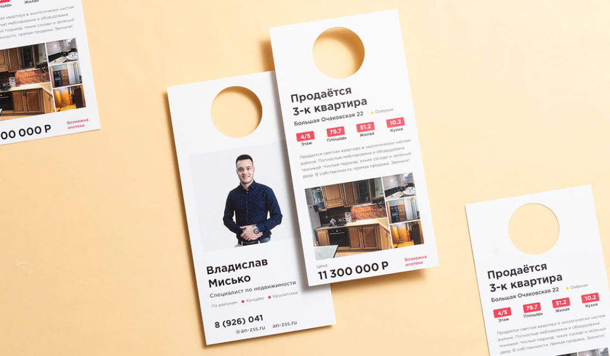

Главная
Блог
08-06-2021 15:10 | МДМПРИНТ
POS-материалы: виды, особенности и назначение
Пример дорхенгеров для риэлтора
Фото: Типография МДМПРИНТ
Аббревиатура POS расшифровывается как Point of Sale, что в переводе означает «точка продаж». В контексте рассматриваемого вопроса «точку продаж» следует рассматривать в широком смысле — как некое учреждение, которое продаёт ту или иную продукцию или услугу. Например, наряду с обычными магазинами под данное определение подходят кафе, парикмахерские, автосервисы и другие организации, предлагающие потенциальным клиентам соответствующие услуги.
Как вы уже, возможно, догадались, POS-материалами называют информационно-рекламные материалы, которые размещаются в точках продаж и содействуют продвижению товара или услуги, а также брендов. По сути, это реклама, которая обычно размещается в четырёх основных зонах: в зоне наружного оформления, в пространстве входной группы, непосредственно в торговом зале, в местах выкладки товара и в прикассовой зоне. В зависимости от места размещения, а также вида POS-материала он выполняет ту или иную функцию: помогает найти дорогу к торговой точке или нужному товару, привлекает внимание потенциального покупателя, предоставляет ему необходимую информацию о товаре, стимулирует совершить покупку и т.п.
Как это часто бывает, в Россию POS-материалы пришли с Запада, поэтому многие их названия являются калькой с английских терминов, что регулярно вводит в заблуждение заказчиков. Не погружаясь в рекламные тонкости и многообразие видов, попробуем разобраться «ху из ху».
Постеры
Пример постера для Therr Maitz
Фото: Типография МДМПРИНТ
На самом деле это старые добрые плакаты или афиши. Постер — просто звучный американизм. Обычно представляют собой большой лист бумаги с нанесённым на одну сторону цветным изображением, хотя, вместо бумаги может использоваться и самоклеящийся материал. В зависимости от формата и тиража плакат может быть отпечатан на офсетной машине, широкоформатном струйном принтере или цифровой машине. Для защиты изображения и продления срока службы плакаты могут дополнительно ламинироваться или покрываться лаком.
В местах продаж плакаты обычно монтируются на стену и выполняют как информационную, так и рекламную функцию. Напечатать на них можно что угодно — от названия отдела в магазине, до информации о текущей распродаже.
221
5
2